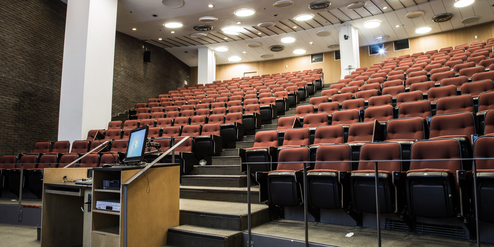

U1

Where it all starts
~ Welcome to Physiology[?]~U1 is the introductory year, where you will learn the foundations of mammalian physiology and life sciences, and basic research techniques in physiology. Subjects include molecular and cell biology, systems physiology, organic chemistry, and physical chemistry. It is also the year of admission for multiple streams, as outlined in the Programs page.
Through out the year the U1 representatives will be hosting events to bring together the U1 PHGY community. Be on the look out for fun events at Gertz or free food outside Leacock and more. We also will be in charge of providing you NTCs second semester for PHGY 210. There will always be a facebook group where you can keep up to date with the latest news and events going on in U1 Physiology.
Core Physiology
The core physiology courses include four 200-level and four 300-level PHGY courses. They are mandatory for students in all streams of the physiology program, therefore we will only slightly discuss them, as there is no choice to be made. A comparison table that summarizes the four core PHGY courses can be found below. Advice given here is purely based on students' opinions and past experiences. They are in no way an accurate reflection of what the courses have to give, and views expressed here are not necessarily the views expressed by the Department of Physiology, the Faculty of Science, or McGill University.Can I take PHGY 210 before PHGY 209?
Short answer: yes.Long answer: yes, but it's not recommended.
PHGY 209 and 210 give an introductory view of the field of physiology, covering most of the major organ systems. It is possible to see the systems mentioned in 210 before the ones shown in 209, but some concepts in 210 build upon concepts acquired in 209. For example, blood physiology is covered in 209, and is a useful asset when discussing cardiovascular and respiratory systems physiology. Also, PHGY 210 is generally considered a more challenging course than 209. Students entering McGill in U1 may find PHGY 210 hard for the first physiology course that they take. Lastly, because PHGY 210 is given in the Winter semester, students who take 209 the following fall may find their curriculum significantly altered in U2 because PHGY 209 is a prerequisite for all 300-level physiology courses.
PHGY 209 - Mammalian Physiology 1
Physiology body fluids, blood, body defense mechanisms, peripheral, central and autonomic nervous system. Not open to students who have taken or are taking NSC 200.
Prerequisite: Collegial Biology or Anatomy, Chemistry, and Physics
Pre or Co-requisites: BIOL 200, 201 or BIOC 212
other students in the Faculty of Science with permission of course coordinator
PHGY 210 - Mammalian Physiology 2
Physiology of cardiovascular, respiratory digestive, endocrine, and renal systems. Students must be prepared to attend evening (19:00-20:00) class tests.
Prerequisite: Collegial Biology or Anatomy, Chemistry, and Physics
Pre or Co-requisites: BIOL 200, 201 or BIOC 212
other students in the Faculty of Science with permission of course coordinator
PHGY 212 - Introductory Physiology Laboratory 1
Exercises illustrating fundamental principles in human physiology: blood, neurophysiology
Co-requisite: PHGY 209
PHGY 213 - Introductory Physiology Laboratory 2
Exercises illustrating fundamental principles in human physiology: cardiovascular, respiratory, endocrinology
Pre-requisite: PHGY 212 - Introductory Physiology Laboratory 2
Co-requisite: PHGY 209 and PHGY 210
| Course | Pros | Cons | Evaluation |
|---|---|---|---|
| PHGY 209: Mammalian Physiology 1 Fall 2017 |
|
|
|
| PHGY 210: Mammalian Physiology 2 Winter 2018 |
|
|
|
| PHGY 212: Introductory Physiology Lab 1 Fall 2017 |
|
|
|
| PHGY 213: Introductory Physiology Lab 2 Winter 2018 |
|
|
|
Other Life Sciences
In the Major curriculum, only 29 out of 65 credits are core physiology, as the program is designed to give an integrated view of life sciences as well. As a result, students are required to take many courses in other life sciences.
BIOL 200: morning or afternoon?
Both morning and afternoon sections of the course have excellent instructors. They do, however, emphasize different topics in their lectures, so one cannot be registered in one section and attend the lectures and exams of the other section.That being said, U1 physiology students may find it more convenient to be in the morning section because the laboratories in PHGY 212 and organic chemistry are in the afternoon, possibly conflicting with BIOL 200.